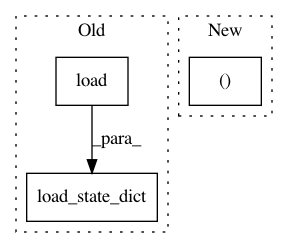

0e10ab0f8d509a7371e59873d96b81792160983c,ch17/03_i2a.py,,,#,15
Before Change
act_n = envs[0].action_space.n
net_policy = common.AtariA2C(obs_shape, act_n)
net_policy.load_state_dict(torch.load(args.policy, map_location=lambda storage, loc: storage))
net_em = i2a.EnvironmentModel(obs_shape, act_n)
net_em.load_state_dict(torch.load(args.em, map_location=lambda storage, loc: storage))
After Change
if args.cuda:
probs_v = probs_v.cuda()
policy_opt.zero_grad()
logits_v, _ = net_policy(obs_v)
policy_loss_v = -F.log_softmax(logits_v) * probs_v
policy_loss_v = policy_loss_v.sum(dim=1).mean()
policy_loss_v.backward()
In pattern: SUPERPATTERN
Frequency: 3
Non-data size: 3
Instances
Project Name: PacktPublishing/Deep-Reinforcement-Learning-Hands-On
Commit Name: 0e10ab0f8d509a7371e59873d96b81792160983c
Time: 2018-03-04
Author: max.lapan@gmail.com
File Name: ch17/03_i2a.py
Class Name:
Method Name:
Project Name: junyanz/interactive-deep-colorization
Commit Name: b813baa342a7ab979362f111a9adb4f6a1f0127c
Time: 2018-09-10
Author: junyanzhu89@gmail.com
File Name: data/colorize_image.py
Class Name: ColorizeImageTorch
Method Name: prep_net
Project Name: google/uis-rnn
Commit Name: ac1f07e722b1117642774b04d96e7174751e325c
Time: 2018-10-18
Author: aonan@aonan.nyc.corp.google.com
File Name: demo.py
Class Name:
Method Name: diarization_experiment